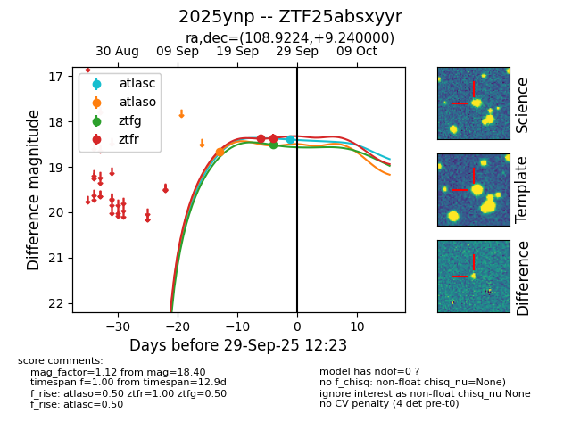
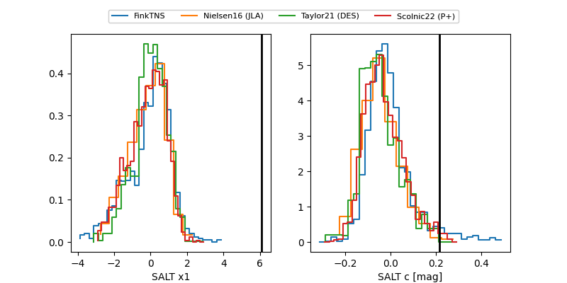

FINK: ZTF25absxyyr
Lasair: ZTF25absxyyr
ALeRCE: ZTF25absxyyr
TNS: 2025ynp
YSE: 2025ynp
ZTF25absxyyr (ztf,fink)
2025ynp (tns,yse)
equatorial (ra, dec) = (108.9224,+9.24000)
galactic (l, b) = (207.3821,+9.55530)


last atlasc=18.40, atlaso=18.66, ztfg=18.52, ztfr=18.37
1 atlasc, 1 atlaso, 1 ztfg, 2 ztfr detections